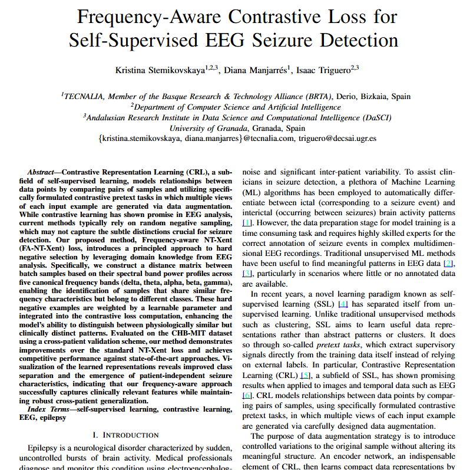

Par Positivo
Dos vistas del mismo ejemplo generadas mediante transformaciones o aumentaciones de datos. El modelo aprende a producir representaciones cercanas para estos pares, capturando la invarianza ante transformaciones irrelevantes.
Aprendizaje de representaciones mediante la comparación de pares similares y disimilares
Contrastive Learning es un paradigma de aprendizaje automático que entrena modelos aprendiendo a comparar ejemplos: acercando en el espacio vectorial aquellas representaciones que deben ser similares (pares positivos) y alejando las que deben ser distintas (pares negativos). Este enfoque permite que el modelo descubra estructuras útiles en los datos sin necesidad de etiquetas manuales, convirtiéndose en uno de los pilares del aprendizaje auto-supervisado moderno.
La idea central puede resumirse con una analogía intuitiva: el modelo aprende que dos augmentaciones distintas de la misma imagen deben producir representaciones cercanas entre sí, mientras que representaciones de imágenes diferentes deben estar alejadas. El componente clave es la función de pérdida contrastiva, que guía este proceso de organización del espacio latente.
El aprendizaje contrastivo se estructura en torno a la construcción y comparación de dos tipos de pares
Dos vistas del mismo ejemplo generadas mediante transformaciones o aumentaciones de datos. El modelo aprende a producir representaciones cercanas para estos pares, capturando la invarianza ante transformaciones irrelevantes.
Vistas procedentes de ejemplos distintos del conjunto de datos. El modelo aprende a separarlas en el espacio vectorial, lo que obliga a las representaciones internas a capturar diferencias semánticamente significativas entre instancias.
La función de pérdida más empleada es la InfoNCE (Noise-Contrastive Estimation), que maximiza la similitud entre pares positivos respecto a los negativos. Variantes como la NT-Xent loss y la pérdida frequency-aware para señales biométricas extienden este marco a dominios específicos.
Cuatro familias de algoritmos que han definido el estado del arte en aprendizaje contrastivo
A pesar de sus avances, el Contrastive Learning enfrenta retos fundamentales que definen las líneas de investigación activas en el campo
Negativos demasiado fáciles no aportan aprendizaje; negativos falsos (instancias similares tratadas como distintas) deterioran las representaciones.
Sin negativos o con arquitecturas inadecuadas, el modelo puede colapsar y asignar la misma representación a todos los ejemplos.
Las transformaciones válidas para imágenes no sirven en señales temporales o EEG; definir cuáles preservan la información relevante requiere conocimiento del dominio.
Requiere baches grandes o colas de negativos extensas, lo que limita su uso directo en entornos con recursos restringidos.
En el grupo GPAIS de la cátedra IAFER, aplicamos Contrastive Learning a problemas donde los datos etiquetados son escasos y la variabilidad entre sujetos es alta, con especial énfasis en señales biomédicas:

2025Este trabajo propone una función de pérdida contrastiva consciente de la frecuencia para la detección auto-supervisada de convulsiones en EEG. A diferencia de los marcos contrastivos estándar, que tratan todas las transformaciones de la señal de forma simétrica, este enfoque incorpora explícitamente el conocimiento de que las distintas bandas de frecuencia del EEG (delta, theta, alpha, beta, gamma) codifican información neurológica diferenciada. El resultado es un sistema capaz de aprender representaciones clínicamente útiles a partir de grabaciones no etiquetadas, con mejoras significativas de rendimiento en evaluaciones cruzadas entre pacientes.
El Contrastive Learning tiene un impacto creciente en múltiples dominios donde los datos no etiquetados son abundantes pero las anotaciones son costosas o escasas: